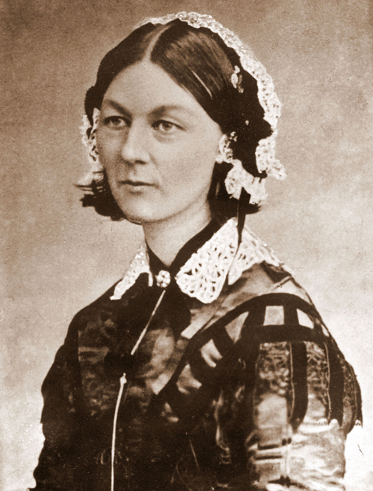

História da Enfermagem
A enfermagem é uma profissão que se desenvolveu ao longo dos tempos. Surgiu do desenvolvimento e evolução das práticas de saúde no decorrer da história. No Brasil, desde a implantação da enfermagem moderna, na década de 20 e até os dias atuais, a história da enfermagem vem sendo objeto de estudo dado sua importância como profissão. A enfermagem, desde suas origens religiosas e militares, é um saber dominado pelas mulheres e dirigido ao ato do cuidar, e tendo os mais pobres como alvos.
Florence Nightingale
Florence Nightingale (1820-1910) foi uma Enfermeira inglesa que ganhou destaque pela atuação pioneira no cuidado a feridos em batalhas, durante a Guerra da Crimeia. Recebeu o apelido de “A Dama da Lâmpada”, do jornal The Times, de Londres, por percorrer todas as enfermarias durante a noite com uma lanterna na mão. Fundou a primeira Escola de Enfermagem da Inglaterra no Hospital Saint Thomas, em Londres.
Conhecida como a criadora da Enfermagem Moderna, Florence recebe como homenagem a comemoração mundial do Dia Internacional da Enfermagem no dia do seu aniversário, 12 de maio. Além disso, o Juramento Nightingale feito pelos novos enfermeiros foi nomeado em sua honra. Florence Nightingale faleceu em Londres, Inglaterra, no dia 13 de agosto de 1910.
Florence Nightingale